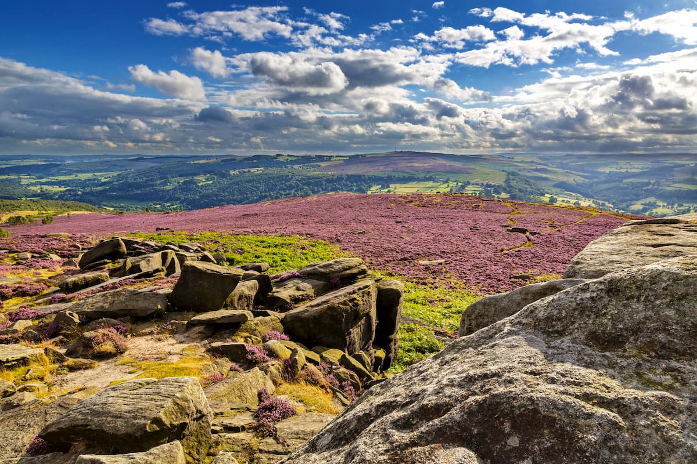
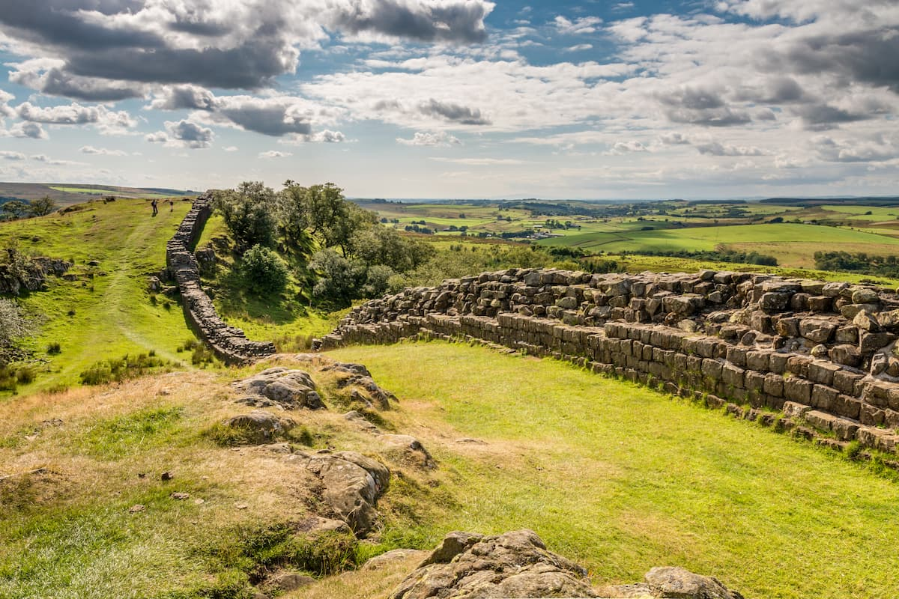
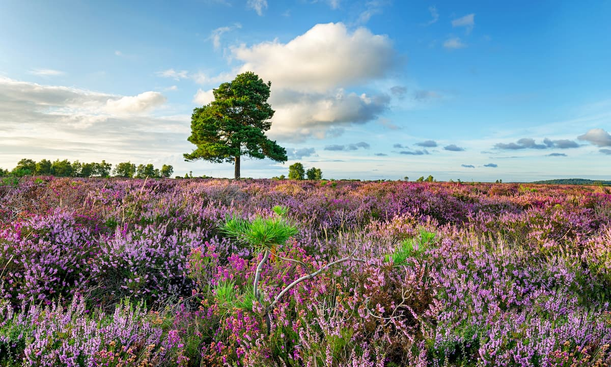
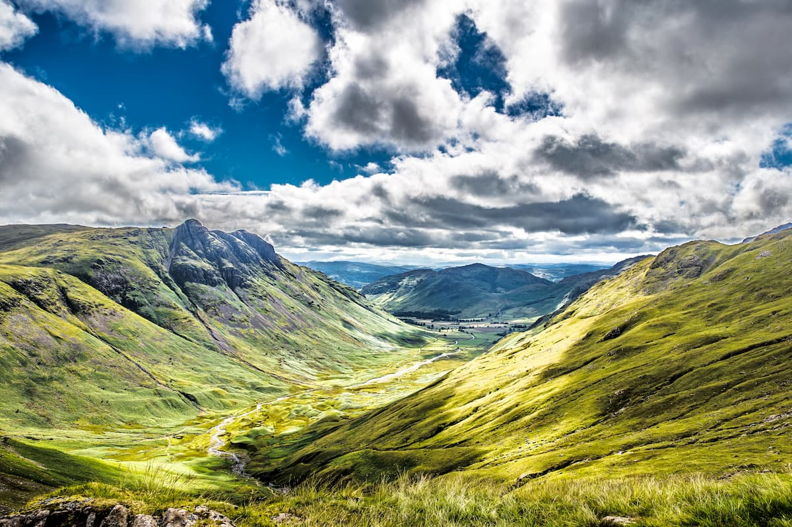
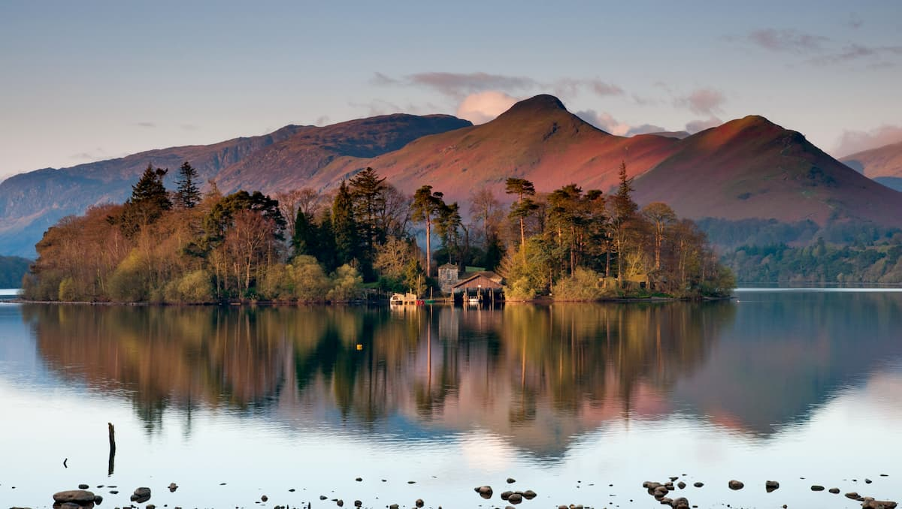
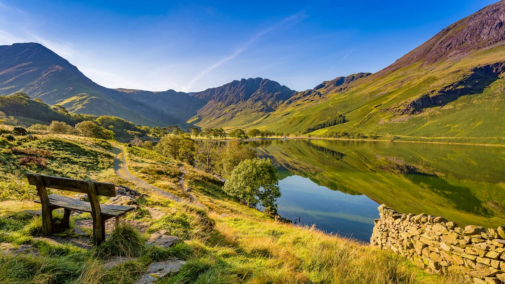
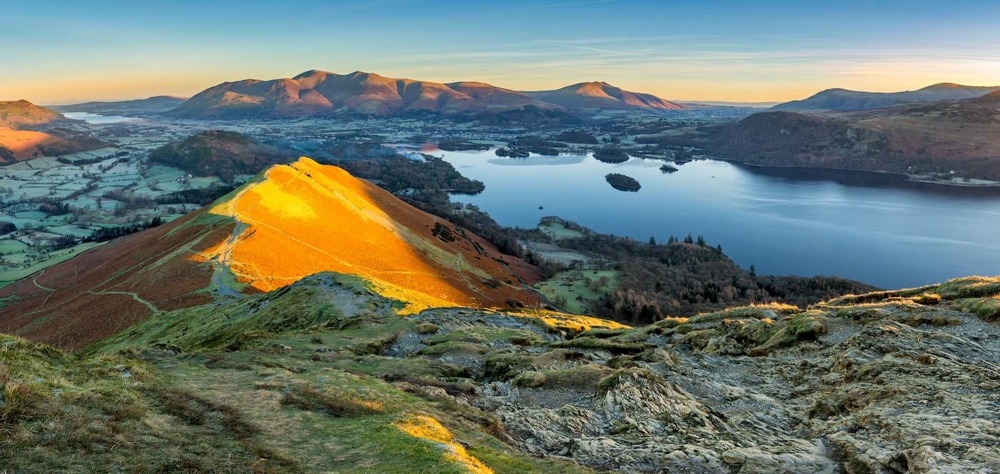
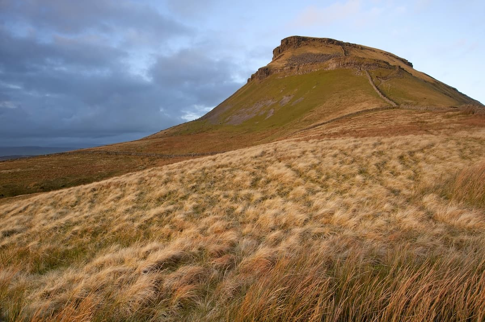
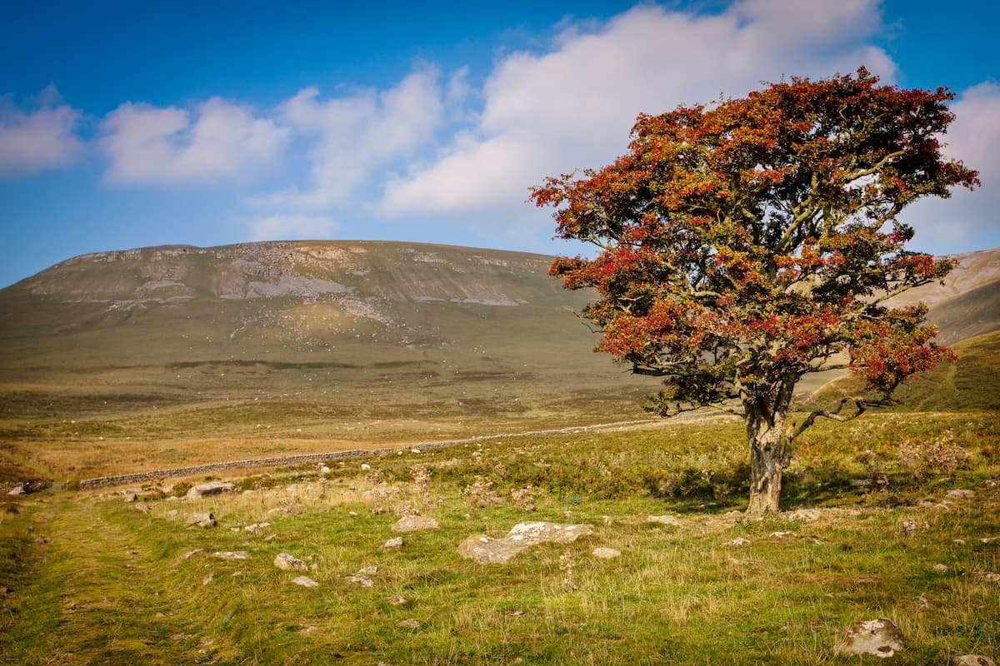

ENGLAND'S PENNINES
the Pennines run through the middle of the north of the country from Derbyshire up into
Northumberland. The Pennines region contains the Peak District National Park, Yorkshire Dales
National Park, and Northumberland National Park.

WALLTOWN CRAGS ON HADRIANS WALL
The southern Pennines are mainly hills, with only Kinder Scout (641 m) exceeding the 610-meter mark.
Regardless, the Peak District is still one of the most popular hiking areas in England, thanks to
its extensive trail system, serene landscape, and fascinating history.

NEW FOREST NATIONAL PARK IN HAMPSHIRE
The South Downs is the hillier of the two parks thanks to its numerous chalk hills. The South Downs
boasts the highest point in the two parks, Ashford Hill (304 m). While the New Forest National Park
is relatively flat.

SCAFELL PIKE WALK
The Lake District is perfect for hikers looking for a challenging climb in England. With dizzying
vistas of serene lakes from atop England’s highest summits, mountain climbing in the Lake District
is the ultimate English hiking adventure.

SKIDDAW WALK
Starting from the town of Keswick, locate the Brundholme Road. Around 500 m along the road is the
start of the old Victorian pony path up the mountain. Continue past the Latrigg car park down the
fenced track, heading north at the fork in the road.

CAT BELLS WALK
Beginner hikers looking for a fun trek that offers superb views of the Lake District should consider
scaling Cat Bells (440 m). This Wainwright is one of the most popular hiking destinations in the
region, as any hiker in good shape can make it to the summit.

DERWENTWATER LAKE AND KESWICK TOWN
he summit of Cat Bells provides views of Derwentwater lake and Keswick town to the east, and the
Western Fells to the west. When descending, head down the easternmost path from Hawes Gate. Keep
left, before turning right at Brandelhow Bay.

YOKSHIRE DALES NATIONAL PARK
The Three Peaks Challenge is one of the hardest walks in the Pennines, taking explorers to the
summit of Yorkshire Dales National Park's three highest peaks: Pen-y-Ghent, Whernside, and
Ingleborough. You’ll want to carefully map your route through the mountains, and come well-prepared
with ordinance maps.

NORTH PENNINES AONB
Cumbria’s Cross Fell is the highest mountain in England outside the Lake District and is one of the
highlights of the Pennine Way. One popular and especially challenging method of climbing Cross Fell
is via the steep Eden Scarp. This hike is about 11 miles, ascends 770 meters, and takes about 6
hours.
 United Kingdom
United Kingdom